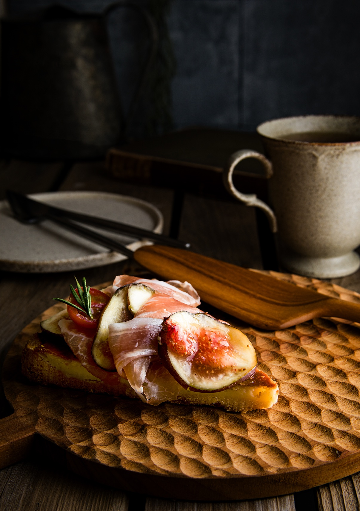
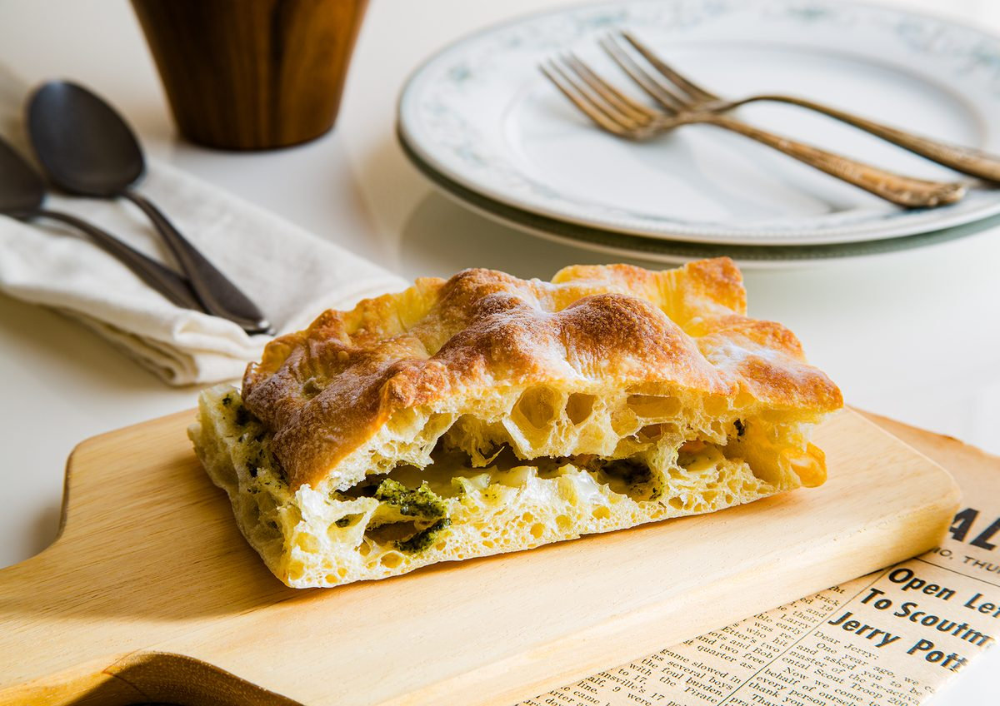
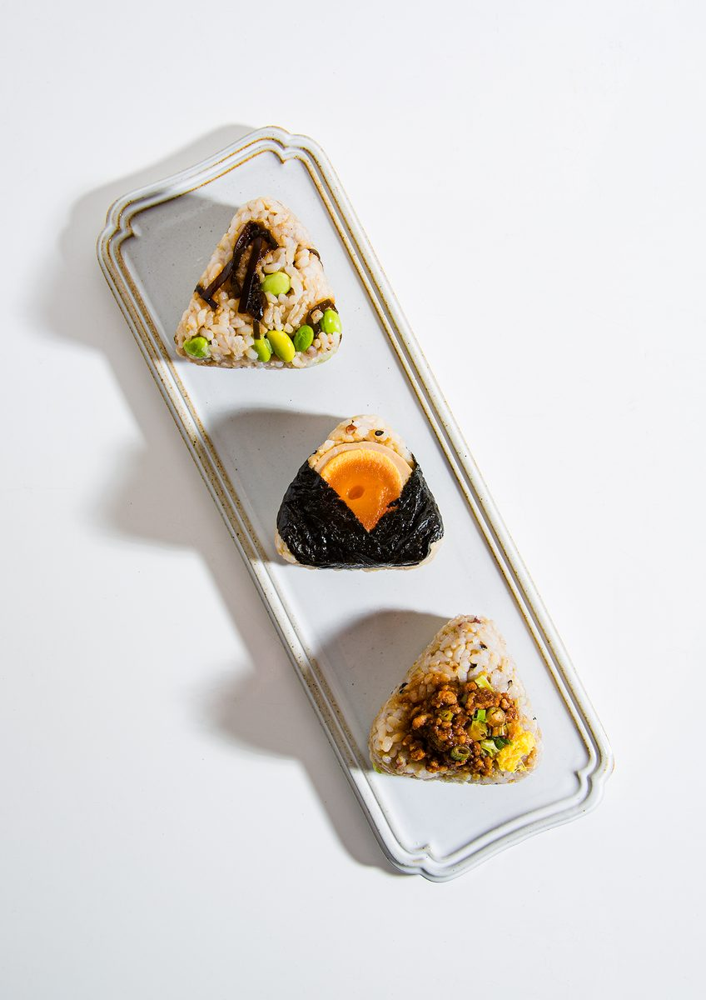

Collections
The 4 Chapters
名古屋を拠点に撮影した、料理写真の作品集です。和菓子やスイーツ、パン、コース料理まで。光と影、現代の美意識、浮遊感、料理の物語。四つの章で、syukocの世界観を紹介します。

Chapter 1
The Alchemy of Light（光の錬金術）
一筋の光が、料理を静物画に変える。17世紀オランダ絵画のような陰影で、スイーツや和菓子の質感を描いた静物写真の章です。
この章を見る →
Chapter 2
Modern Aesthetics（現代の審美眼）
引き算の美学。余白と直線で、現代のレストランやカフェの一皿を切り取った章です。メニューやSNSで映える、清潔感のある料理写真を集めました。
この章を見る →
Chapter 3
Culinary Narratives（食の物語）
仕込みから完成まで。作り手の手と時間を追い、料理の物語を伝える章です。お店の想いを届けたいブランド撮影の参考に。
この章を見る →
ポートフォリオサイト：
photo.syukoc.net →
Contact
撮影のご相談は
公式LINEから
まずは公式LINEで、撮影したい商品とご希望の時期をお送りください
内容を確認して、こちらからご返信します
LINEをご利用でない方は、メールまたはお問い合わせフォームからご連絡ください